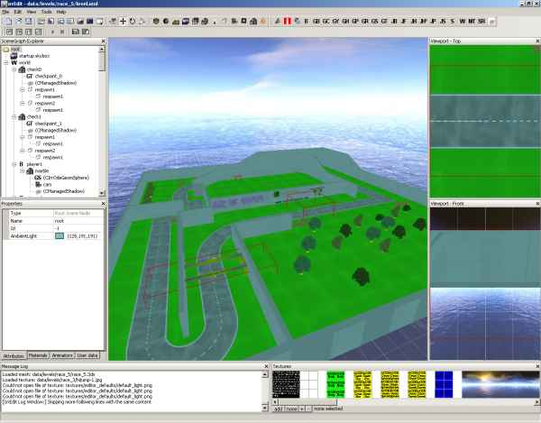
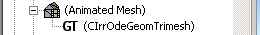
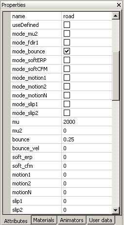
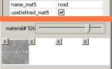
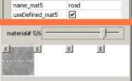
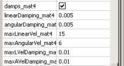

During development of a game using the IrrODE wrapper I came to the conclusion that it would be nice to have e.g. a complete racetrack stored in one 3d object. A racetrack normally contains different surfaces, like the road to drive on and some slippery grass aside the road. Internally a static trimesh is now divided into one ODE trimes for each material found in the 3d file. The screenshot below shows IrrEdit with an open file of a racetrack that I will discuss in this tutorial.

Once you have modelled your racetrack in a 3d editor and imported the model to IrrEdit you have to assign a trimesh to the model to continue.


The first material didn't change much. You can now assign a name to a material so that it can be used later on. The
"useDefined" will be explained later, the rest of the parameters didn't change. To get more information about these
you should refer to the ODE manual.
If you have a named material in your scene ("road" in this case) you can refer to it later on. The names of the attributes of materials other than the first have a "mat_<number>" added so that you know which material these surface parameters are used for.  As you can see from the little screenshot on the right the racetrack from the first screenshot contains at least 5 materials. The 5th material is shown in the lower part of the image, and the upper part defines the material to use the parameters of a material named "road". To make IrrODE use already defined surface parameters it is necessary to enter the name of the material to be used in the name_mat<number> attribute and to check the "useDefined_mat<number>" checkbox. If you told the plugin to use another material the attributes of your referencing material will be hidden, they can only be changed in the original location. Be aware that if you define more than one material with the same name as master (i.e. the "useDefined_mat<number>" checkbox is not checked in more than one material of the same name) the behaviour is undefined.
Notice that whenever you create a static trimesh IrrOde will always create a surface parameter set for each material, so if you do
only want to have on set of surface parameters for the object you will have to define the parameters in one material and then reference
them in all the others. Moreover surface parameters can be referenced from the complete scene, i.e. if you have e.g. more than one object
with a road part in it is only necessary to define the parameters once somewhere in your scene file.If you have a named material in your scene ("road" in this case) you can refer to it later on. The names of the attributes of materials other than the first have a "mat_<number>" added so that you know which material these surface parameters are used for.  As you can see from the little screenshot on the right the racetrack from the first screenshot contains at least 5 materials. The 5th material is shown in the lower part of the image, and the upper part defines the material to use the parameters of a material named "road". To make IrrODE use already defined surface parameters it is necessary to enter the name of the material to be used in the name_mat<number> attribute and to check the "useDefined_mat<number>" checkbox. If you told the plugin to use another material the attributes of your referencing material will be hidden, they can only be changed in the original location. Be aware that if you define more than one material with the same name as master (i.e. the "useDefined_mat<number>" checkbox is not checked in more than one material of the same name) the behaviour is undefined.
There is another new feature for static objects, no matter which geom they use: damping. This means that you can specify a surface of any static object to damp colliding dynamic objects.  The screenshot on the left shows the correspondig attributes that you can set using the IrrOdEdit plugin for IrrEdit. These values are:
- damps_mat<num>: this material damps colliding dynamic objects
- linearDamping_mat<num>: the linear damping that is applied to the object no matter how fast it is
- angularDamping_mat<num>: the angular damping that is applied to the object no matter how fast it is
- maxLinearVal_mat<num>: objects with a linear velocity greater than this value will get both the linear damping defined above and in addition the linear damping defined below applied
- maxAngularVal_mat<num>: objects with an angular velocity greater than this value will get both the angular damping defined above and in addition the angular damping defined below applied
- maxVelLDamping_mat<num>: this is the additional linear damping applied to colliding objects faster than the maximum linear velocity defined above
- maxVelADamping_mat<num>: this is the additional angular damping applied to colliding objects faster than the maximum angular velocity defined above